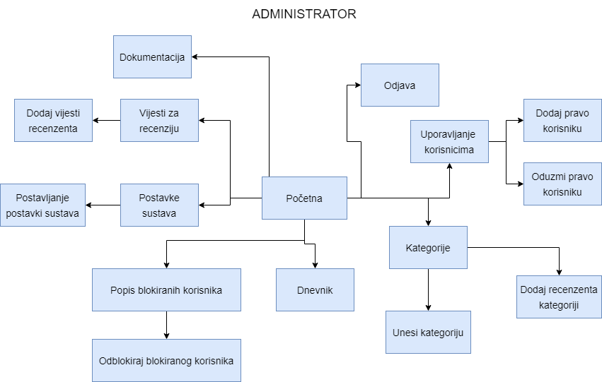

Popis i opis skripata, mapa mjesta, navigacijski dijagram
Mapa admin
Skripta blokirani_korisnici.php
Ova skripta generira popis svih blokiranih korisnika zbog neuspjelog broja pokušaja ulaska u sustav (1. tablica) i korisnika koji su blokirani u određenoj kategoriji (2. tablica).
Također administrator ima mogućnost odblokiranja korisnika.
Skripta dnevnik.php
Ova skripta prikazuje sve zapise dnevnika. Administrator može vidjeti tko se kada logirao u sustav, odjavio iz sustava, napisao vjest, registrirao se itd.
Također može filtrirati prema željenom kriteriju tako da lakše dođe do podataka koje traži.
Skripta kategorija
Skripta omogućuje administratoru unošenje nove kategorije u sustav. Također može vidjeti sve postojeće kategorije u sustavu i dodjeliti pojedinoj moderatora. Također može i obrisati kategoriju iz sustava.
Skripta korisnici.php
Ova skripta prikazuje sva korisnička imena korisnika u sustavu i njihovu ulogu te im može dati/oduzeti ulogu.
Skripta postavke.php
Unutar skripte se nalaze popis postavki sustava koje administrator može mjenjati. Prilikom trajanja ažuriranja postavki, stranica postaje nedostupna za sve korisnike.
Skripta vijesti_recenzija.php
Skripta sadrži popis svih napisanih vijesti u sustavu koje čekaju recenziju. Također može dodati svakoj vijesti njenog recenzenta prilikom.
Mapa css
Skripta blokirani_korisnici.css
Unutar skripte se nalazi vizualni opis za skriptu blokirani_korisnici.php.
Skripta detaljnije.css
Ova skripta sadrži vizualni opis skripte detaljnije.php koja prikazuje informacije pojedine vijesti.
Skripta dnevnik.css
Unutar skripte se nalazi vizualni opis za skriptu dnevnik.php.
Skripta greske.css
Unutar skripte se nalazi vizualni opis grešaka za sve skripte u kojima može doći do greške prilikom unosa podataka.
Skripta index.css
Unutar skripte se nalazi vizualni opis za skriptu index.php.
Skripta ispis.css
Unutar skripte se nalazi vizualni opis za elemente ispisa (u PDF ili printer) skripti koje imaju statistiku.
Skripta nedostupno.css
Unutar skripte se nalazi vizualni opis za skriptu nedostupno.html.
Skripta opcenito.css
Unutar skripte se nalazi vizualni opis zajednički elemenata svih skripti.
Skripta popupforma.css
Unutar skripte se nalazi vizualni opis pop-up forme u skripti odbijeno.php.
Skripta popupformamoderatorvijesti.css
Unutar skripte se nalazi vizualni opis pop-up forme u skripti vijestimoderator.php.
Skripta popupformamojevijesti.css
Unutar skripte se nalazi vizualni opis pop-up forme u skripti mojevijesti.php.
Skripta postavke.css
Unutar skripte se nalazi vizualni opis skripte postavke.php.
Skripta prijava.css
Unutar skripte se nalazi vizualni opis skripte prijava.php.
Skripta registracija.css
Unutar skripte se nalazi vizualni opis skripte registracija.php.
Skripta skrivenpopup.css
Unutar skripte se nalazi kod za skrivanje pop-up forme kod skripte odbijeno.php.
Skripta stranicenje.css
Unutar skripte se nalazi vizualni opis funkcionalnosti straničenja kod svih skripti koje imaju implementirano straničenje.
Skripta tablice.css
Unutar skripte se nalazi vizualni opis tablica kod svih skripti koje imaju tablice.
Skripta vijesti_recenzija.css
Unutar skripte se nalazi vizualni opis skripte vijesti_recenzija.php.
Skripta vijesti.css
Unutar skripte se nalazi vizualni opis skripte vijesti.php.
Mapa javascript
Skripta msitaric_kategorije_jquery.js
Ova skripta sadrži funkciju za automatsko popunjavanje korisnika u polje za unos u skripti kategorije.php.
Skripta msitaric_kategorije.js
Ova skripta sadrži funkciju za provjeru ispravnosti unosa podataka u skripti kategorije.php.
Skripta mojevijesti.js
Ova skripta sadrži funkciju za provjeru ispravnosti unosa podataka u skripti mojevjesti.php.
Skripta msitaric_odbijeno.js
Ova skripta sadrži funkciju za provjeru ispravnosti unosa podataka u skripti msitaric_odbijeno.php.
Skripta msitaric_prijava.js
Ova skripta sadrži funkciju za provjeru ispravnosti unosa podataka u skripti msitaric_prijava.php.
Skripta msitaric_registracija.js
Ova skripta sadrži funkciju za provjeru ispravnosti unosa podataka u skripti msitaric_registracija.php.
Skripta msitaric_registriran_statistika.js
Ova skripta sadrži funkciju za ispis stranice te funkciju za generiranje PDF dokumenta.
Skripta msitaric_recenzija_jquery.js
Ova skripta sadrži funkciju za automatsko popunjavanje korisnika u polje za unos u skripti vijesti_recenzija.php.
Skripta msitaric_recenzija.js
Ova skripta sadrži funkciju za provjeru ispravnosti unosa podataka u skripti vijesti_recenzija.php.
Skripta msitaric_vijestimoderator.js
Ova skripta sadrži funkciju za provjeru ispravnosti unosa podataka u skripti vijestimoderator.php.
Mapa json
Datoteka searchKorisnici.json
Unutar ove datoteke se nalazi popis korisnika koji se smiju unjeti u polje za unos.
Mapa materijali
Sve datoteke u ovoj mapi sadrže audio, video i slike pojedinih vijesti sustava.
Mapa moderator
Skripta odbijeno.php
Ova skripta sadrži popis svih odbijenih vijesti autora i može se pojedini autor blokirati u kategoriji napisane vjesti.
statistika.php
Unutar ove skripte moderator može vidjeti statistiku broja primljenih i odbijenih vijesti sustava te ih može ispisati ili skinuti u PDF formatu.
Skripta vijestimoderator.php
Unutar skripte se nalazi popis svih vjesti koje su dodjeljene prijavljenom moderatoru za recenziranje te ih može recenzirati.
Mapa neregistrirani
Skripta detaljnije.php
Unutar ove skripte se nalaze sve informacije o odabranoj vijesti sa skripte vijesti.php
Skripta vijesti.php
Unutar ove skripte se nalazi popis svih primljenih vijesti sustava i mogu se filtrirati prema broju pregleda i tagovima. Otvaraju se informacije o vijesti klikom na njen naslov.
Obrasci
Skripta prijava.php
Ova skripta sadrži formu za prijavu korisnika u sustav. Također korisnik može odabrati da li želi zapamtiti svoje korisničko ime i lozinku.
Skripta registracija.php
Ova skripta sadrži formu za registraciju korisnika u sustav. Radi provjeru unosa podataka prije nego li pošalje aktivacijski mail sa kodom.
Mapa php
Skripta msitaric_registracija
Ova skripta obavlja funkciju provjere registracije korisnika. Ako je korinik zakasnio sa svojom registracijom, onda ne aktivira njegov račun.
Skipta zaboravljena.php
Skripta obavlja funkciju slanja nove lozinke na mail u slučaju zaboravljene lozinke.
Mapa privatno
Ovo je zaštićena mapa .htaccess-om i u njoj se nalazi skripta korisnici.php.
Skripta korisnici.php
Ova skripta sadrži popis svih korisničkih imena sustava, njihove lozinke i uloge.
Mapa registriran
Skripta blokiranekategorije.php
Ova skripta sadrži popis svih kategorija u kojima je registrirani korisnik blokiran.
Skritpa mojevijesti.php
Ova skripta omogućuje pregled svih vijesti koje je registrirani korisnik napisao. Također daje mogućnost pisanja novih vijesti te ažuriranja vijesti koje su na doradi.
Skripta registriran_statistika.php
Ova skripta sadrži popis svih vijesti logiranog korisnika te broj njihovih pregleda. Također može statistiku isprintati ili skinuti u PDF formatu.
Mapa vanjske_datoteke
Ova mapa sadrži skriptu baza_class.php preuzetu sa Moodle sustava.
Skripta baza_class.php
Ova skripta omogućuje spajanje na bazun dohvaćanje podataka s baze, ažuriranje podataka na bazi i odspajanje na bazu.
Mapa xml
Datoteka postavke.xml
Ova datoteka sadrži sve parametre postavki sustava koje može ažurirati samo admin.
Ostale skripte
Skripta index.php
Ovo je početna skripta koja služi za navigaciju do ostalih skripti, do nje može doći svaki korisnik sustava.
Skripta nedostupno.html
Ova skripta je stranica na koju se sve druge preusmjeravaju u slučaju ažuriranja postavki sustava.
Skripta dokumentacija.html
Ova skripta sadrži dokumentaciju cijelog projekta.
Skripta o_autoru.html
Ova skripta sadrži podatke o autoru projekta.
Navigacijski dijagrami
Navigacijski dijagram administratora

Navigacijski dijagram moderatora/recenzenta
Navigacijski dijagram registriranog korisnika/autora
Navigacijski dijagram neregistriranog korisnika